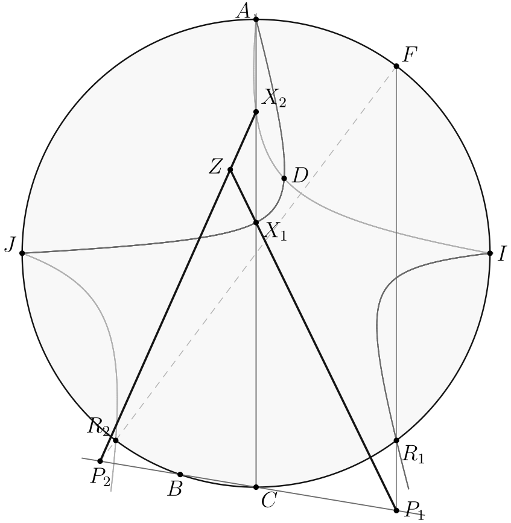
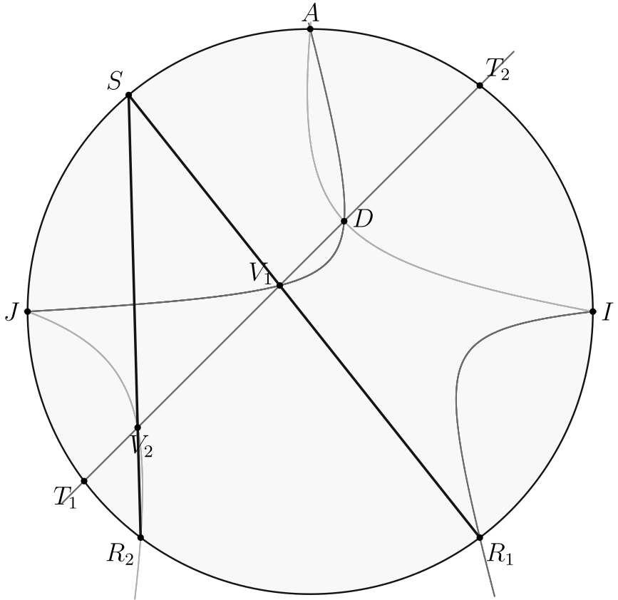
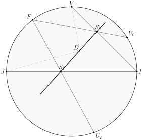
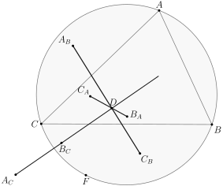
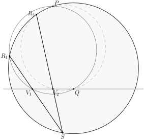

The text of this post was generated by GPT 6 Sol, and is a continuation of the work done in Anchor Point Lemmas and the Handout. Since I thought this text had some good ideas, I thought of posting it.
Theorem 1 (Four-base conic-pencil Evil)
Let \(\mathcal K\) be a nonsingular conic through \(A,B,C,I,J,F\), and fix \(D\notin\mathcal K\). As \(\mathcal H\) varies through \(A,I,J,D\), put \[ R=(\mathcal H\cap\mathcal K)\setminus\{A,I,J\}, \quad X=(\mathcal H\cap AC)\setminus\{A\}, \quad P=FR\cap BC. \] The lines \(PX\) pass through one fixed point \(Z=Z(D)\). If \(\mathcal K=(ABC)\) and \(I,J\) are the circular points at infinity, this is the \(AC\)-half of Evil; interchanging \(B,C\) gives the other half.

Proof. The pencil parameter gives projectivities to the remaining points \(X\in AC\) and \(R\in\mathcal K\); projecting \(R\) from \(F\) gives \(P\in BC\). These two point rows agree at their common point \(C\): the member through \(C\) gives \(R=X=P=C\). Hence their projectivity is a perspectivity, with center \(Z\).
Exchanging \(B\) and \(C\) proves the existence of the other Evil anchor point in exactly the same way.
Theorem 2 (Conic-to-line anchor)
In Theorem 1, instead take a fixed line \(\ell\) through the fourth base point \(D\), and put \(V=(\mathcal H\cap\ell)\setminus\{D\}\). Then the lines \(RV\) pass through one fixed point \(S\) on \(\mathcal K\). The point \(F\) plays no role in this reading.

Proof. The correspondence \(R\in\mathcal K \leftrightarrow V\in\ell\) is projective. At each of the two points of \(\ell\cap\mathcal K\), both points of the correspondence coincide. Choose any third pair \(R_0,V_0\) and let \(S\) be the other intersection of \(R_0V_0\) with \(\mathcal K\). Projection from \(S\) gives the same three correspondences, hence all of them.
Theorem 3 (Residual line of a conic pencil)
Fix \(V,I,J,F\in\mathcal K\) and \(D\notin\mathcal K\). For the pencil \(\mathcal H\) through \(V,I,J,D\), let \(U\) be its fourth point on \(\mathcal K\), and let \(S_U\) be its other intersection with the line \(FU\). All \(S_U\) lie on one fixed line \(L_{V,F}(D)\) through \(D\); moreover \(U\mapsto S_U\) is projective.
Proof. Write matching conic and line pencils \(h_{s,t}=s h_0+t h_1\) and \(\ell_{s,t}=s\ell_0+t\ell_1=FU\). Eliminating \((s:t)\) gives the cubic \(h_0\ell_1-h_1\ell_0=0\). It contains every \(U\in\mathcal K\), so it factors as \(\mathcal K\cup L\). The fourth base point \(D\) lies on the cubic but not on \(\mathcal K\), so \(D\in L\); every other intersection \(S_U\) lies on \(L\). Restriction of the conic pencil to \(L\), with fixed root \(D\), makes \(S_U\) projective in its parameter.

With \(I,J\) circular, the circles \((UVD)\) are this pencil as \(U\) varies on \(\Gamma\). The Evil characterization puts the conjugate for any triangle \(UVW\) on \(DS_U=L_{V,F}(D)\): the third vertex \(W\) is irrelevant. Equivalently, \[ \angle(DV,L_{V,F}(D)) =\angle VUF\pmod{180^\circ}, \] which depends only on chord \(VF\). Taking \(V=A,B,C\) gives the three lines through \(D\) containing the six conjugates in the handout.

Problem 1 (Irish Mathematical Olympiad 2007, Paper 1 Problem 3)
The point \(P\) is a fixed point on a circle and \(Q\) is a fixed point on a line. The point \(R\) is a variable point on the circle such that \(P,Q,\) and \(R\) are not collinear. The circle through \(P,Q,\) and \(R\) meets the line again at \(V\). Show that the line \(VR\) passes through a fixed point.

Proof. Call the fixed circle \(\Gamma\) and the fixed line \(\ell\). The circles \((PQR)\) form the pencil through \(P,Q,I,J\), where \(I,J\) are circular. It shares \(P,I,J\) with \(\Gamma\), while \(Q\in\ell\) is its fourth base point. Theorem 2 gives the fixed point of \(VR\) on \(\Gamma\).